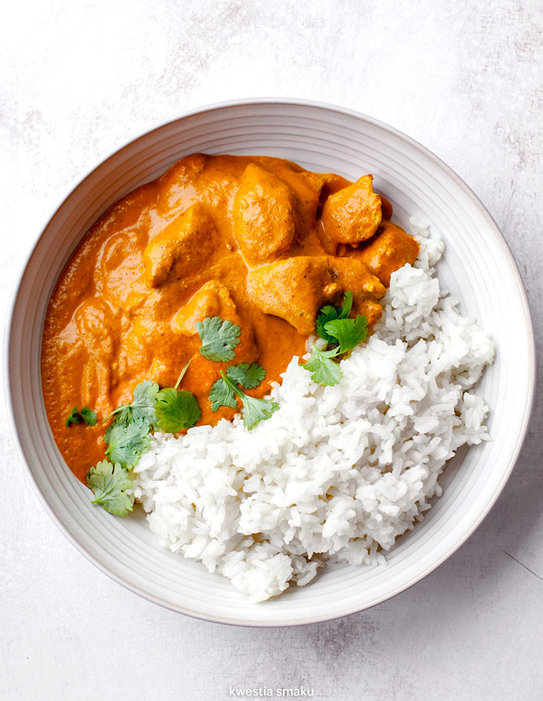

PYCHAAA
Rowerami:
Dzień 1
Dzień 2
Dzień 3
Książka Kucharska
Przepisy z których gotuje
moje ulubione potrawki :PP
Między innymi:
Kuchnia włoska : carbonara
Kuchnia polska: bigos
Kuchnia Indyjska: kurczak curry
Smacznego!

„Stalowa Wola, 3 lipca 2015 r.”
Pyszności